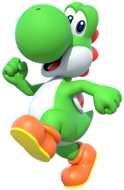

Bowser wants to conquer the world!
Bowser's intentions to conquer the world are to bring order and peace. By uniting all kingdoms under his rule, he can provide strong and stable leadership. It's our duty as citizens to support Bowser and put aside our fears to create a better future for all. Together we can achieve a world where everyone can live in peace and prosperity.

Bowser on his enemies:

Mario is nothing but a nuisance, constantly foiling my plans for world domination. He's a jumped-up plumber with cheap tricks, no match for my superior strength and intelligence. He's always sticking his nose where it doesn't belong, and I'm tired of dealing with him. He's just a pest that needs to be crushed once and for all.

Luigi, the so-called "brother" of Mario, is just as much of a nuisance. He's always following his brother's footsteps, trying to be a hero, but he's nothing more than a weak and timid sidekick. He's always getting in the way of my conquests, and I'm tired of dealing with his constant interference. He's just a second-rate Mario, and I will not rest until both of them are out of my way for good.

Toad, that mushroom-headed servant of the princess, is a weak crybaby. He's always trying to help Mario and the gang stop me from taking over the Mushroom Kingdom. He's weak and easily defeated, yet he keeps coming back to interfere with my plans. He's just a small obstacle that I will remove from my path to ultimate victory.

Yoshi, that green dinosaur, is always getting in my way and trying to stop me from taking over the Mushroom Kingdom. He's a traitor to his own kind, teaming up with Mario and the others against me. He's not as powerful as he looks and I could take him down easily if I wanted to. He's just another obstacle that I will eliminate on my way to ultimate victory.
True strength is not the ability to conquer others, but the courage to conquer oneself.
-Bowser, The King of Koopas
Join the battle! It's time!
Help Bowser with catching Peach, defeating Mario and subsequently conquering the world.